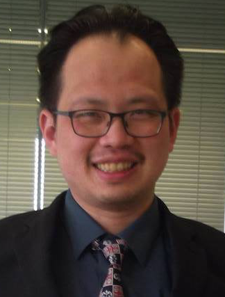
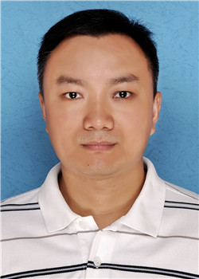

The third international workshop in Enterprise Security
as part of UCC 2016 (http://computing.derby.ac.uk/ucc2016/)Tongji University, Shanghai, China, December 6 - 9, 2016
Contact:
Dr. Victor Chang, Xi’an Jiaotong Liverpool University, PR China (Email: ic.victor.chang@gmail.com)
- Motivation, rationale, coverage and CFP:
- Between page 1 and 4 as follows.
- Workshop format:
- Expected number of workshop participants is between 20 and 25. Around 20 and 30 of conference delegates will join the workshop at each break from time to time. Hence, about 40 ad 55 people will be expected at all times. All papers have been undergone vigorous review process. All workshop papers have up to 6 pages following IEEE formats. Each author/presenter of regular papers has up to 25 minutes. Each author/presenter of position papers has up to 20 minutes. We will present up to 2 invited talks and each keynote will have around 45 minutes. The main chair will have 5 minutes briefing at the beginning and at the end of the workshop. We will award the best paper awards and have an award ceremony.
- Prior history:
There were 24 submissions and 11 papers were selected. 5 were regular papers with 33.33% acceptance rate. 6 were position paper with 38.89% acceptance rate. We offered the best three paper awards and the best presenter awards. Winners have been selected to contribute to International Journal of Information Management (IJIM; IF: 1.550) and Future Generation Computer Systems (FGCS; IF: 2.786). We helped CloudCom 2014 and 2015 organizers to select top papers for FGCS invitation. The highest attendance was 46 in 2014 workshop and 34 in 2015 workshop. We had two financial sponsors supporting our event, which were DSI Singapore and HP UK in 2014. At the end of the workshop, we presented the award ceremony. Winners received their certificates of winning category. Each delegate also received a certificate of participation and had group photographs taken, which are available on our social network website. 14 talks (including 1 keynote and my introductory and concluding talks) were all completed right at 5 pm on Monday November 30, 2015. CloudCom 2014 and 2015 organizers and delegates regarded us as the most successful workshop.
Scope:
Enterprise security is the key to achieving global information security in business and organizations. Cloud computing is a new paradigm for enterprise where businesses need to be secured. However, this new trend needs to be more systematic with respect to cloud security, which is a factor in sustaining cloud technology by building-in trust. For example, current challenges with cyber security and application security flaws are highlighting important lessons to be learned and also lead to the adoption of best practices. Similarly, as the demand for cloud services increases, the importance of security and privacy will also increase.
One solution is to develop a framework for enterprise security to analyze and model organizational security of the cloud and its data. In particular, cloud data and cloud storage technologies (Amazon s3, drop box, Google drive, etc.) have now become normal practice for almost every computing user. This can explain why building trust for cloud users is one of the main focuses of cloud computing research. On the other hand, the social, human and business aspects of enterprise security are essential to users to keep their skills, business concepts and policies up-to-date. By maintaining all these aspects of security, organizations can develop an enterprise security solution to work together with business models, such as cloud provider enterprise model and cloud consumer enterprise model. In this way, enterprise security can address technical and organizational aspects of security to provide added value and win-win situations for users, adopters and service providers. Following the successful delivery of our workshop in 2014, we oversee the importance of enterprise security as a unique and rising field to ensure all aspects of security and risks can be identified, surveyed, tested, prototyped and minimized with recommendations and lessons learned disseminated. The scope of enterprise security has expanded into risk management/analysis, management of future technologies such as internet of things and big data and modern ethical hacking methods that can provide a robust and enhanced level of enterprise security.
By blending technical and organizational aspects of security, our workshop can provide a platform for intellectual discussions and interactions. To highlight the significance of enterprise security and disseminate research contributions in cloud community, we welcome papers addressing technical (implementations, algorithms, experiments, simulation, modeling and prototypes) and organizational (information system related issues, recommendation and best practices, frameworks, risks) issues.
Topics:
- Algorithms, software engineering and development
- System design and implementation
- Testing (software engineering; penetration; product development)
- Encryption (all aspects)
- Firewall, access control, identity management
- Experiments of using security solutions and proof-of-concepts
- Large-scale simulations in the Cloud, Big Data and Internet of Things
- Intrusion and detection techniques
- Social engineering and ethical hacking: techniques and case studies
- Risk Modeling, business process modeling and analytics
- Trust and privacy
- Data security, data recovery, disaster recovery
- Data center management
- Adoption challenges and recommendation
- Risk management and control
- Business and economic models
- Change management and continuous service improvement
- Information systems related issues
- Conceptual frameworks and models
- Emerging issues and recommendations for organizational security
- E-Commerce and online banking
- Social network analysis, emerging issues in social networks
- Education and e-Learning
- Surveys and their quantitative analysis
- Architecture (technical or organizational)
- Case studies
The focus of this workshop is to present new techniques, demonstrations, innovative approaches and case studies related to Enterprise Security. The impacts of research contributions are as follows.
- Explain how to implement enterprise security and their added values.
- Demonstrate how enterprise security can be used in different case studies.
- Describe how to resolve challenges in each adoption scenario.
- Provide reproducible steps for anyone to follow, and support reproducibility, an important aspect in Cloud Computing science.
- Explain how their Cloud services can work effectively in production and real-time
- Present how their services can make contributions to users involved in the use of Cloud services and adoption.
- Sum up and disseminate all the lessons learned and recommendation to play an influential role in academia and industry.
The workshop chairs (Biographies at the end of the proposal):
Main chair:
Dr. Victor Chang, Xia’an Jiaotong Liverpool University,,China
Co-chairs (1-2 more may be on the team):
Dr. Gang Sun, University of Electronic Science and Technology of China (UESTC), China
Prof. Jin Li, Guangzhou University, China
Dr. Bob Duncan, University of Aberdeen, UK
Roger Hallman, Space & Naval Warfare Systems Center Pacific, US Department of Defense, USA
Dr. Chung-Sheng Li, IBM, US
Prof. Wendy Currie, Audencia Nantes, France
Preliminary Program Committee:
Omar Abdul-Rahman, National Institute of Informatics, Japan
Saad Alahmari, Princess Noura Bint Abdulrahman University, Saudi Arabia
Naif Aljohani, King Abdulaziz University, Saudi Arabia
Mitra Arami, American University of Middle East, Kuwait
Khin Mi Mi Aung, Agency for Science, Technology and Research (A*STAR), Data Storage Institute, Singapore
Reinhold Behringer, Leeds Beckett University, United Kingdom
Tony Bryant, Leeds Beckett University, United Kingdom
K Chandrasekaran, National Institute of Technology Karnataka, India, India
Tzu-chun Chen, TU Darmstadt, Germany
Darren Chong, Singapore, Singapore
Takahiro Hirofuchi, National Institute of Advanced Industrial Science and Technology, Japan
Ryan Ko, University of Waikato, New Zealand
Kevin Kuo, Fusions360, Taiwan
Natalia Kushik, Tomsk State University, Russian Federation
Mohamed Mohamed, Institut Mines-Telecom Telecom SudParis Evry, France
Siani Pearson, HP Labs, Bristol, United Kingdom
Muthu Ramachandran, Leeds Beckett University, United Kingdom
Shuqin Ren, Data Storage Institute, Singapore
Jose Simao, Instituto Superior de Engenharia de Lisboa, Portugal
Luís Veiga, Inesc-id / Ist, Portugal
Yun Wan, University of Houston, United States
Tomasz Wiktor Wlodarczyk, University of Stavanger, Norway
Fan Zhang, MIT, United States
Important dates:
Paper Submissions: July 15, 2016
Notification of Acceptance: August 21, 2016
Camera Ready Versions: September 19, 2016
Other relevant information:
Objective:
- Disseminate good practices and case studies offered by in the use of Enterprise Security.
- Demonstrate the proof-of-concepts, prototypes, algorithms, software engineering and development.
- Disseminate on how to resolve existing issues in Enterprise Security and the added value offered by Enterprise Security.
- Present case studies, frameworks, recommendations and new research/enterprise contributions to the organizations that adopt and improve on their security policies, technologies and practices.
Workshop: We will select good papers demonstrating their merits in offering research/enterprise contributions. Each presentation will take around 25 minutes, and be followed by about 5 minutes of questions and answer session per talk. The chairs will also have a final discussion topic right before the end of the workshop. We welcome researchers in either technical or organizational aspects of Enterprise Security, as well as industrial practitioners in Enterprise Security to join our discussions and social interactions.
Submission Process
Authors are invited to submit papers containing unpublished, original work (not under review elsewhere) of up to 6 pages of double column text using single spaced 10 point size on 8.5 x 11 inch pages, as per IEEE 8.5 x 11 manuscript guidelines. Templates are available from:
http://www.ieee.org/conferences_events/conferences/publishing/templates.html.
Authors should submit a PDF file. Papers conforming to the above guidelines can be submitted through the workshop's EasyChair submission system. At least one author of each accepted submission must attend the workshop and all workshop participants must pay at least the CloudCom 2015 workshop registration fee. All accepted papers will be published by the IEEE in the same volume as the main conference.
All presented papers will be undertaken with a double-blind review process, and extended versions of the workshop papers will be likely to be published in a special issue: Enterprise Security, International Journal of Organizational and Collective Intelligence (IJOCI) and Open Journal of Big Data. We will also set up a special issue with Future Generation Computer Systems (FGCS) and another leading journal for top paper UCC delegate winners.
Biographies:
|  |
Dr. Victor Chang is an Associate Professor at International Business School Suzhou, Xi’an Jiaotong Liverpool University, Suzhou, China. He was a Senior Lecturer in the School of Computing, Creative Technologies at Leeds Beckett University, UK and a visiting Researcher at the University of Southampton, UK. He is an expert on Cloud Computing and Big Data in both academia and industry with extensive experience in related areas since 1998. Dr Chang completed a PGCert (Higher Education) and PhD (Computer Science) within four years while working full-time. He has over 70 peer-reviewed published papers. He won £20,000 funding in 2001 and £81,000 funding in 2009. He was involved in part of the £6.5 million project in 2004, part of the £5.6 million project in 2006 and part of a £300,000 project in 2013. Dr. Chang won a 2011 European Identity Award in Cloud Migration. He was selected to present his research in the House of Commons in 2011 and won the best papers in 2012 and 2015. He has won a European special award: best project in research in 2016.
He has demonstrated ten different Cloud Computing and Big Data services in both of his practitioner and academic experience. His proposed frameworks have been adopted by several organizations. He is the founding chair of international workshops on Emerging Software as a Service and Analytics and Enterprise Security. He is a joint Editor-in-Chief (EIC) in International Journal of Organizational and Collective Intelligence and a founding EIC in Open Journal of Big Data. He is the Editor of two prestigious journals, Future Generation Computer Systems (FGCS) and Journal of Network and Computer Applications (JNCA, in summer 2016). He is a reviewer of numerous well-known journals. He has 27 certifications with 97% on average. He is a keynote speaker of CLOSER/WEBIST/ICT4AgeingWell 2015. Dr. Chang has published three books on Cloud Computing which are available on Amazon website. He is the founding chair of two international conferences www.iotbd.org and www.complexis.org with many positive comments received.
|
 |
Dr. Gang Sun received his Ph.D. degree in Communication and Information Engineering from University of Electronic Science and Technology of China (UESTC). He is now an associate professor at School of Communication and Information Engineering, UESTC. From 2015 to 2016, he was a Visiting Fellow at the Research School of Computer Science, Australian National University (ANU). His research interests include network survivability, network security, next generation Internet and cloud computing. He has published more than 40 high-quality papers in international journals and conferences, including IEEE Transaction on Service Computing (TSC), Future Generation Computer Systems (FGCS), Computer Networks, IEEE System Journal, IEEE Globecom, IEEE ICC etc. His research is supported by multiple grants of National Science Foundation of China (NSFC).
|
|
Prof. Jin Li He received his B.S. (2002) and M.S. (2004) from Southwest University and Sun Yat-sen University, both in Mathematics. He got his Ph.D degree in information security from Sun Yat-sen University at 2007. Currently, he is a professor at Guangzhou University. His research interests include design of secure protocols in Cloud Computing (secure cloud storage and outsourcing computation) and cryptographic protocols. He served as a senior research associate at Korea Advanced Institute of Technology (Korea) and Illinois Institute of Technology (U.S.A.) from 2008 to 2010, respectively. He has published more than 100 papers in international conferences and journals, including IEEE INFOCOM, IEEE Transaction on Parallel and Distributed Computation, ESORICS etc. He also served as TPC committee for many international conferences such as ICCCN and CloudCom etc. He received a National Science Foundation of China (NSFC) Grant for his research on “Security and privacy-assured outsourcing computation in cloud computing”.
He has been selected as one of science and technology new stars in Guangzhou and outstanding young scholar in Guangdong province.
|
|
Dr. Bob Duncan is a Teaching Fellow at the University of Aberdeen, UK. He qualified as an accountant in 1975, spending decades in industry with a particular interest in the application of computing systems to both management and financial information. He developed a range of tailored courses for a variety of companies to ensure companies and their staff could take full advantage of computer systems, and in 2011 received his M.A. (Hons) in Computing and acquired his PhD in Computing Science in March 2016, with a specialism in cyber security in the cloud. His research interests are focused on developing cyber security solutions for industry which are particularly geared towards management and finance.
|

|
Roger Hallman is a Cybersecurity Research Scientist and a Science & Technology Manager at the Space & Naval Warfare Systems Center, Pacific, US Department of Defense. Since joining the Department of Defense in 2014, Mr. Hallman has authored or co-authored publications on enterprise decision making, secure cloud computing, and critical infrastructure security. He is a lead or co- inventor on multiple patent applications in the areas of enterprise decision making and secure computation. His research interests include encrypted computing, active Cyber-security, and data privacy.
|
|
Dr. Chung-Sheng Li is currently the director of the Commercial Systems Department, PI for the IBM Research Cloud Initiatives, and the executive sponsor of the Security 2.0 strategic initiative. He has been with IBM T.J. Watson Research Center since May 1990. His research interests include cloud computing, security and compliance, digital library and multimedia databases, knowledge discovery and data mining, and data center networking. He has authored or coauthored more than 130 journal and conference papers and received the best paper award from IEEE Transactions on Multimedia in 2003. He is both a member of IBM Academy of Technology and a Fellow of the IEEE. He received BSEE from National Taiwan University, Taiwan, R.O.C., in 1984, and the MS and PhD degrees in electrical engineering and computer science from the University of California, Berkeley, in 1989 and 1991, respectively.
|
|
Prof. Laurence T. Yang graduated from Tsinghua University, China and got his Ph.D in Computer Science from University of Victoria, Canada. He joined St. Francis Xavier University in 1999. His current research includes parallel and distributed computing, embedded and ubiquitous/pervasive computing. He has published many papers in various refereed journals, conference proceedings and book chapters in these areas, including around 100 international journal papers in numerous IEEE Transactions journals. He has been involved actively in conferences and workshops as a program/general/steering conference chair and numerous conference and workshops as a program committee member. He served as the vice-chair of IEEE Technical Committee of Supercomputing Applications (TCSA) until 2004, was the chair (elected in 2008 and 2010) of IEEE Technical Committee of Scalable Computing (TCSC), the chair of IEEE Task force on Ubiquitous Computing and Intelligence (2009- ). He was also in the steering committee of IEEE/ACM Supercomputing conference series (2008-2011), and the National Resource Allocation Committee (NRAC) of Compute Canada (2009-2013).
In addition, he is the editors-in-chief of several international journals. He is serving as an editor for many international journals. He has been acting as an author/co-author or an editor/co-editor of many books from Kluwer, Springer, Nova Science, American Scientific Publishers and John Wiley & Sons. He has won several Best Paper Awards (including IEEE Best and Outstanding Conference Awards such as the IEEE 20th International Conference on Advanced Information Networking and Applications (IEEE AINA-06), etc); one Best Paper Nomination; Distinguished Achievement Award, 2005; Canada Foundation for Innovation Award, 2003. He has been invited to give around 30 keynote talks at various international conferences and symposia.
|